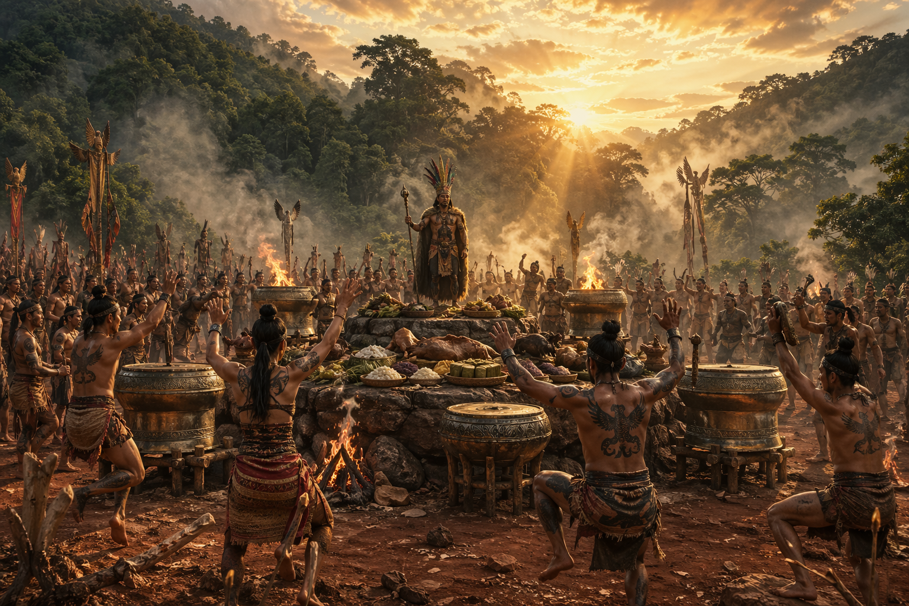

10 hình ảnh đặc trưng Văn Lang
Những chi tiết hình ảnh chân thực nhất từ nghiên cứu khảo cổ, sẵn sàng cho AI tạo hình.

Mái nhà cong hình thuyền
Nhà sàn cột gỗ lim nguyên khối, mái cỏ tranh xòe rộng, hai đầu hồi cong vút như mũi thuyền rẽ sóng.

Các Vua Hùng — Thủ lĩnh Văn Lang
Vua Hùng — thủ lĩnh luyện kim và quân sự, nắm giữ bí quyết đúc đồng, kiểm soát quyền lực liên minh bộ lạc.

Toàn cảnh thời đại Văn Lang
Đầu tết búi tóc, đội mũ cắm lông chim trĩ vươn cao như tia sáng mặt trời; mặc áo hai tà hoặc khố nhuộm nâu.
Trang phục phụ nữ Lạc Việt
Váy xếp ly dệt sợi gai dài xấp xỉ bắp chân, viền váy hoa văn hình thoi, zíc zắc trùng khớp hoa văn thạp đồng.

Ngọc Nephrite — Trang sức quý
Chuỗi vòng cổ, khuyên tai, vòng tay bằng đá ngọc xanh lục trong suốt từ thời Phùng Nguyên, mài nhẵn mịn bóng loáng.

Mặt trống đồng Đông Sơn
Trống đồng vàng xanh xỉn, trung tâm ngôi sao 12 cánh, bao quanh vòng hoa văn chim lạc bay ngược chiều kim đồng hồ.

Vũ khí đồng thau
Rìu lưỡi xéo khắc chìm hình người nhảy múa, mũi tên đồng ba cạnh và giáo mác — vũ khí thời đại đồ đồng.
Giã gạo chày đôi
Đôi nam nữ đứng đối diện, dùng chày gỗ dài giã nhịp nhàng vào cối gỗ hình thuyền — nhịp sống nông nghiệp lúa nước.
Thuyền chiến độc mộc
Thuyền dài đẽo từ thân cây lớn, chở chiến binh xăm mình Giao Long, giữa thuyền có người đánh trống chỉ huy.
Lò đúc đồng ban đêm
Lửa rực đỏ hắt lên thân hình vạm vỡ, thợ thủ công rót dòng đồng lỏng chói lọi vào khuôn đúc trống.